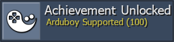
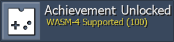

Community News
 By
RANews
By
RANews
Contents
Intro
So long DevNews. Hello Community News. We are changing this page to feature news for all the community members, including news on new console support, Quality Assurance, Developer Compliance, Web updates, Developer tool updates, Discord updates, DevQuest, QualityQuest, and more. If you have any information you would like to see monthly in this article please let us know. With that, lets see what all has happened in the RA Community throughout the month of April.
Console Support
Arduboy

Arduboy is a miniature game system the size of a credit card with over 200 free games to play. The games are all open source so, if interested, you could learn to code and create your own games. More information about the Arduboy can be found here.
You can check out which games currently have achievement sets here.
WASM-4

WASM-4 is a low-level fantasy game console for building small games with WebAssembly. Game cartridges (ROMs) are small, self-contained .wasm files that can be built with any programming language that compiles to WebAssembly. More information about the WASM-4 can be found here.
You can check out which games currently have achievement sets here.
A Look Towards the Future
While it’s always exciting to get new system support, there is also a lot of work that goes into it. We need time to test core functionality and to properly expose memory. Developers need time to look through the game list, pick some games and create the sets for them. It’s not something that happens over night. Here is a look at some potential upcoming rollout systems, please keep in mind that there is no current ETA for any of these.
- CHIP-8
- Fairchild Channel F
- Mega Duck
- PS2
- Sega Pico
- Uzebox
Quality Assurance & Developer Compliance
The QA Team Restructure was finally implemented on 04/27/2022. The main goal of this QATeam Restructure was to split the current roles of the @QATeam into three: Quality Assurance, Developer Compliance and DevQuest. Quality Assurance would focus on achievements set quality with respect to logic and writing. Developer Compliance would focus on adherence and updates to the Developer Code of Conduct. DevQuest would focus on maintaining DevQuest spreadsheet, tracking claims and completed quests, voting on new quests, etc.
The three teams can all be reached by either sending a message to the site accounts (QATeam, DevCompliance and DevQuest) or by pinging the role in Discord.
Quality Assurance
- Cleared out and
~Z~‘d the following game IDs: 6476, 6477, 6478, 6479, 5038, 5039, 5040, 5041. - Dark License to Kill subset approved for Goldeneye 007.
- Gold Medals subset approved for Dragon Warrior III.
- Approved sets for ~Homebrew~ DMG Express and ~Homebrew~ Transmissions.
- Demoted 18916, 18922 and 27025 based on a revision vote.
- Approved set for ~Hack~ Fall Guys World.
Developer Compliance
Nothing to report from April for this team given we only had a few days. New users are getting acclimated to how the team operates. More to come in the next issue.
Site Updates
RAWeb Version 1.84
- Add recent masteries page by @Tsearo in #571
- Split Site Awards into Game/Event/Site Awards by @Jamiras in #937
- Separate subsets from similar games by @Jamirass in #940
- Add pagination to games list; replace dev filter with has achievements filter by @Jamiras in #942
- Allow merging aliased hubs by @Jamiras in #939
- More detailed achievement modification messages by @Tsearo in #947
- Show user game history on ticket page by @Jamiras in #945
- Hide controlpanel sidebar until user is registered by @Jamiras in #943
- Reset account to unverified when user changes their email address by @Jamiras in #944
- Escape apostrophes in hash descriptions by @Jamiras in #948
- PHP 8 compatibility by @luchaos in #935
- Use PHP 8 language features (using Rector) by @luchaos in #911
- Ignore achievements with no retro ratio when determining easiest achievements by @Jamiras in #941
- Lazy load images for completion list by @Jamiras in #946
- Fix inbox output sanitization by @luchaos in #936
RAWeb Version 1.84.1
- Allow award groups to be ordered by @Jamiras in #950
- Remove pagination for per-console games with achievements lists by @Jamiras in #951
- Start with collapsible sections collapsed by @Jamiras in #949
RATools
RATools Version 1.8.5
- Many improvements to generating scripts from existing achievements
- Support for generating from local achievements
- Support for built-in macros
- Support for compound code note sizes i.e. “[32-bit float]”
- Convert
PauseIfwith hitcounts/ResetNextIflogic todisable_when() - Convert
AddHitschain totally() - Fix exception if macro has no parameter
- Fix exception when no tickets are found
- Add
array_map()function - Add
tally_of()function - Add logic to convert “A<1||A>1” into “A!=1”
- Support for multiple conditions in a
ResetNextIfusingOrNext - Make error more user-friendly when an if expression cannot be evaluated at compile time
- Fix multiple conditions in a
repeated()inmeasured(when=)getting split into separateMeasuredIfs
Discord Updates
Several Discord updates this month as a reault of the QA Team Restructure and developer preparation
Role Additions
| Role | Purpose |
|---|---|
@QA-Maintainer |
Formally named @QA-Team, renamed as part of the QA Team Restructure. Helps maintain the several Quality Assurance discord teams. |
@Dev-Compliance |
New role for new team created during the QA Team Restructure. Handles any Developer Code of Conduct related topics. |
@DevQuest |
New role for new team created during the QA Team Restructure. Handles DevQuest related topics. |
@Compatibility-Tester |
New role for new team created during the QA Team Restructure. Helps to test ROM compatibility for existing sets. |
@Set-Repair |
Role and team resseructedew team created during the QA Team Restructure. Help to fix sets that are highly exploitable or vulnerable. |
Channel Additions
| Channel | Purpose |
|---|---|
#ardu-wasm-rollout |
Discussion and preperation channel for developers to get ready for the Arduboy and WASM-4 rollout. |
#auction-house |
Allows devs to “bib” on highly exploitable or vulnerable old sets to become the new author. |
#compatibility-tester |
Discussion channel for the @Compatibility-Tester members. |
#devs-help-me |
A help me channel dedicated to the developer questions. |
#devquest-discussion |
Discussion channel for the @DevQuest members. |
#devquest-inbox |
Messages to the DevQuest site user get forwarded here. |
#dev-compliance |
Discussion channel for the @Dev-Compliance members. |
#dev-compliance-log |
Log channel for notable DevCompliance actions. |
#dev-compliance-inbox |
Messages to the DevCompliance site user get forwarded here. |
#pcsx2-testing |
Discussion and testing channel for developers interested in PS2 achievements creation. |
#qualityquest |
Discussion and submission channel for QualityQuest. |
#qualityquest-inbox |
Messages to the QualityQuest site user get forwarded here. |
#set-repair |
Discussion channel for the @Set-Repair members. |
Addition Updates
- RABot
!contactcommand updated to add DevQuest, QualityQuest and to reflect the QA Team Restructure changes. #tickets-cleanuphas been locked down to the@Ticket-Houndsrole in an effort to turn that role into a team that handles closing out bad tickets, forwarding manual unlick requests, and organizes Devember.
DevQuest
DevQuest Awards
![[DevQuest 001] Ticket Massacre](https://retroachievements.org/Images/044438.png) [DevQuest 001] Ticket Massacre
[DevQuest 001] Ticket Massacre
![[DevQuest 002] Summer Set Repair](https://retroachievements.org/Images/044439.png) [DevQuest 002] Summer Set Repair
[DevQuest 002] Summer Set Repair
![[DevQuest 003] Singles In Your Area](https://retroachievements.org/Images/044440.png) [DevQuest 003] Singles In Your Area
[DevQuest 003] Singles In Your Area
 wolfman2000
wolfman2000 WanderingHeiho
WanderingHeiho![[DevQuest 006] The Unwanted](https://retroachievements.org/Images/045565.png)
 BigWeedSmokerMan for Turntablist - DJ Battle
BigWeedSmokerMan for Turntablist - DJ Battle Brandovsky for Flink (The Misadventures of Flink)
Brandovsky for Flink (The Misadventures of Flink) ventuz for Mr. Driller
ventuz for Mr. Driller Hotscrock for Golden Axe
Hotscrock for Golden Axe voiceofautumn for Word Munchers
voiceofautumn for Word Munchers
![[DevQuest 007] Most Wanted](https://retroachievements.org/Images/046249.png)
 pinguupinguu for Kirby Squeak Squad
pinguupinguu for Kirby Squeak Squad timenoe for Rayman 2: The Great Escape
timenoe for Rayman 2: The Great Escape gollawiz for Dragon Quest Heroes: Rocket Slime
gollawiz for Dragon Quest Heroes: Rocket Slime zxmega for Ultimate Mortal Kombat 3
zxmega for Ultimate Mortal Kombat 3
![[DevQuest 008] World Traveler](https://retroachievements.org/Images/047727.png)
 ladynadiad for Dream Master (NES) & Puyo Puyo Sun 64 (Nintendo 64)
ladynadiad for Dream Master (NES) & Puyo Puyo Sun 64 (Nintendo 64) LogicalFallacy for L.O.L.: Lack of Love (Dreamcast) & Engacho! (PlayStation)
LogicalFallacy for L.O.L.: Lack of Love (Dreamcast) & Engacho! (PlayStation)- Brandovsky for Mother 1+2 (Game Boy Advance) & Momotarou Dengeki | Momotaro Thunderbolt (Game Boy)
![[DevQuest 009] Launch Party!](https://retroachievements.org/Images/048656.png)
 Chawk for Sonic Adventure 2
Chawk for Sonic Adventure 2 Blazekickn for Beach Buggy Simulator
Blazekickn for Beach Buggy Simulator SpaceRaton for ~Homebrew~ A Prelude To Chaos
SpaceRaton for ~Homebrew~ A Prelude To Chaos TheJediSonic for Jet Set Radio | Jet Grind Radio
TheJediSonic for Jet Set Radio | Jet Grind Radio- ventuz for Klax
![[DevQuest 011] Happy Birthday RA!](https://retroachievements.org/Images/049821.png) [DevQuest 011] Happy Birthday RA!
[DevQuest 011] Happy Birthday RA!
 msdmario for Bonkers
msdmario for Bonkers StingX2 for Double Dragon V: The Shadow Falls (Mega Drive)
StingX2 for Double Dragon V: The Shadow Falls (Mega Drive) affftedio for Pyramid Magic (Mega Drive)
affftedio for Pyramid Magic (Mega Drive) Jamiras for Pagemaster, The (Mega Drive)
Jamiras for Pagemaster, The (Mega Drive)- timenoe for Tom and Jerry: Frantic Antics! (Mega Drive)
 kmpers for Chase H.Q. II | Super H.Q. (Mega Drive)
kmpers for Chase H.Q. II | Super H.Q. (Mega Drive) xTr4ceur for Wings of Wor | Gynoug (Mega Drive)
xTr4ceur for Wings of Wor | Gynoug (Mega Drive) siouxerskate for BattleTech: A Game of Armored Combat (Mega Drive)
siouxerskate for BattleTech: A Game of Armored Combat (Mega Drive)
![[DevQuest 012] Hacker's Habit](https://retroachievements.org/Images/052519.png)
 Cadaxar for ~Hack~ Super Metroid: Harvest & ~Hack~ Final Fantasy IV: Unprecedented Crisis (SNES)
Cadaxar for ~Hack~ Super Metroid: Harvest & ~Hack~ Final Fantasy IV: Unprecedented Crisis (SNES)- voiceofautumn for ~Hack~ Fire Emblem: Vision Quest (Game Boy Advance) & ~Hack~ Super Boss Collection (SNES)
- StingX2 for ~Hack~ Rockman 5: Air Sliding & ~Hack~ Fall Guys World
![[DevQuest 014] Laudable Leaderboards](https://retroachievements.org/Images/057070.png) [DevQuest 014] Laudable Leaderboards
[DevQuest 014] Laudable Leaderboards
 TheMysticalOne
TheMysticalOne ![[DevQuest 015] Console Conqueror](https://retroachievements.org/Images/053919.png) [DevQuest 015] Console Conqueror
[DevQuest 015] Console Conqueror
QualityQuest
The goal of this event is to help the website as a whole, whether it be rescores, grammar corrections, ticket save states or full game save states. This event can evolve over time to include more if the community would like, but this is a good starting point for the event.
Community Contributions
| Category | Contribution |
|---|---|
| Save States | 89 Games with full save states received 3,418 Total save states received States for 22 different tickets received |
| Grammar | 201 Achievement grammar corrections received & updated |
| Art | 5 Incorrect badge sizes fixed |